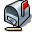
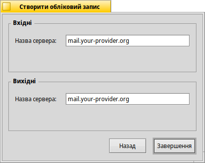
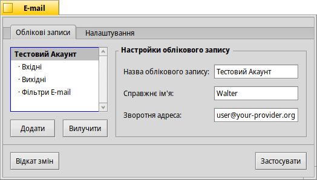
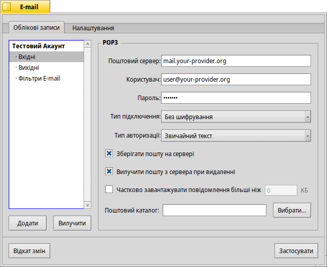
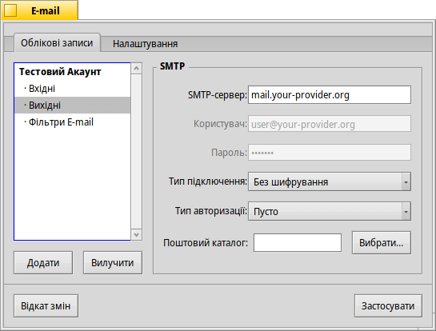
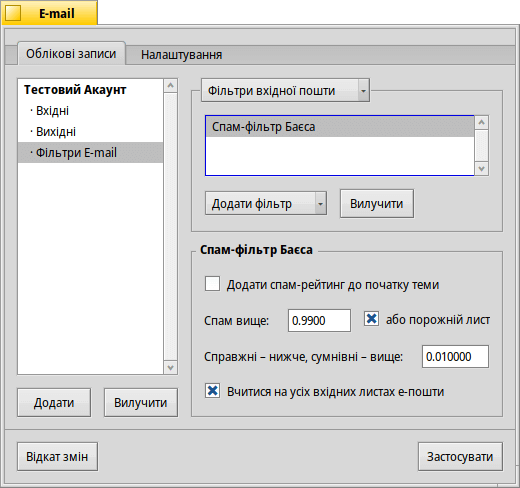
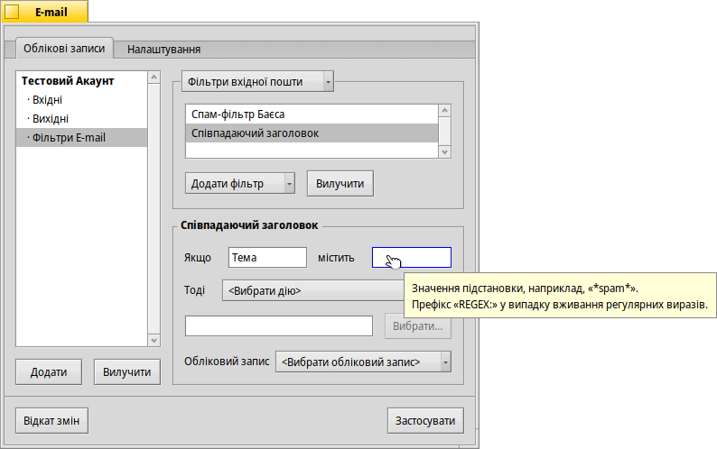
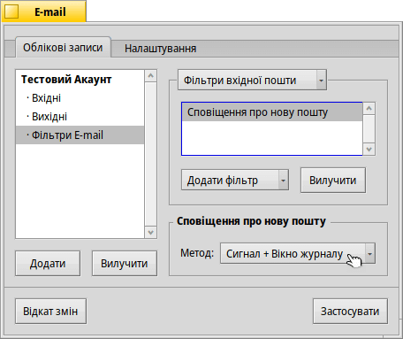
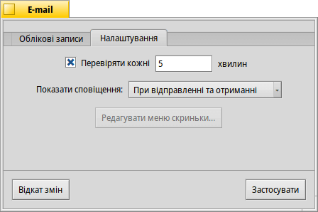
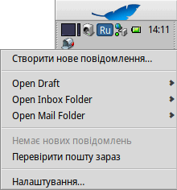

| Індекс |
|
Створення нового облікового запису Настройки облікового запису Настройки вхідної пошти Настройки вихідної пошти Сповіщення та поштові фільтри Налаштування поштового сервісу |
 E-mail (E-пошта)
| Deskbar: | ||
| Розташування: | /boot/system/preferences/E-mail | |
| Налаштування: | ~/config/settings/Mail/* |
Поштова система Haiku регулярно отримує електронну пошту через поштовий сервіс (також відомий як mail_daemon) і зберігає кожне повідомлення у вигляді окремого текстового файлу. Вона аналізує лист і заповнює його атрибути всією необхідною для заголовка інформацією, такою як: від кого, до кого, тема і статус непрочитаного листа. Тепер Ви можете працювати з повідомленням самостійно або з будь-якої програми. Ця система також полегшує перехід на інший поштовий клієнт, оскільки усі дані та настройки залишаються незмінними.
Конфігурація системи задається на панелі налаштувань електронної пошти.
 Створення нового облікового запису Е-пошти
Створення нового облікового запису Е-пошти
Давайте розглянемо процес створення облікового запису електронної пошти.
Ви починаєте з натискання кнопки , щоб створити новий акаунт без назви. Це відкриє панель, де Ви можете заповнити інформацію про свій обліковий запис:
По-перше, Ви встановлюєте спосіб отримання пошти – через або .
Після цього Ви вводите Адресу E-mail, Ім'я для авторизації і Пароль, вказуєте Назву акаунта під якою акаунт буде зареєстрований у Haiku і своє Справжнє Ім'я.
Якщо у Вас обліковий запис від популярного провайдера електронної пошти, Haiku вже знає усі технічні деталі, такі як IP-адреса сервера. Якщо це не так, при натисканні кнопки , відкриється інше вікно для введення цієї інформації вручну:
Дивіться сторінку підтримки Google, щоб дізнатися, як увійти за допомогою паролів програм.
Настройки облікового запису
Вибравши назву облікового запису у списку в лівій частині вікна, Ви можете змінити деякі загальні настройки цього запису:
Назва акаунта – це назва, яка відображається, наприклад, у списку акаунтів у налаштуваннях електронної пошти. Справжнє ім'я – ім'я, яке бачить користувач, коли отримує від Вас повідомлення. Зворотня адреса – це адреса електронної пошти, яка використовується, коли хтось відповідає на Ваш лист. Зазвичай це та сама адреса, з якої Ви надіслали листа.
Якщо Ви хочете використовувати обліковий запис електронної пошти лише для відправки або лише для отримання листів, Ви можете увімкнути або вимкнути цей режим, зробивши правий клік миші на назві акаунта у списку в лівій частині вікна і встановивши відповідні позначки.
Докладно про настройки вхідної пошти
Натисніть рядок під назвою Вашого акаунта, щоб настроїти параметри отримання електронних листів.
По-перше, це адреса для вхідних листів. Якщо Ваш провайдер вимагає, щоб Ви увійшли на певний порт, Ви додаєте його до адреси, розділяючи двокрапкою. Наприклад, pop.your-provider.org:1400.
Потім Ви вводите свою реєстраційну інформацію, ім’я Користувача та Пароль і, якщо необхідно, змінюєте Тип підключення з на а Тип авторизації зі стандартного на для автентифікації.
Якщо Ви використовуєте POP3 і отримуєте пошту цього акаунта з різних комп'ютерів, Ви можете активувати опцію і , якщо пошта видаляється на локальному комп'ютері.
Якщо Ви використовуєте IMAP, у Вас є опція , якщо пошта видаляється на локальному комп'ютері. Кнопка дозволяє настроїти папки для синхронізації лише з певною папкою та її підпапками.
Крім того, Ви можете вибрати опцію . У цьому випадку буде завантажено лише заголовок, і Ви зможете вирішити, чи хочете завантажити решту повідомлення разом з можливими вкладеннями, після того, як побачите тему і того, хто його надіслав. Корисно, якщо у Вас повільне з'єднання.
Ви можете змінити Поштовий каталог Вашої вхідної скриньки (за замовчуванням: /boot/home/mail/in/), що може бути корисним, якщо Ви хочете розділити листи з різних облікових записів на окремі папки. Втім, за допомогою запитів Ви можете впорядкувати все так само добре.
Докладно про настройки вихідної пошти
Натисніть рядок під назвою Вашого акаунта, щоб настроїти параметри відправки електронних листів.
По-перше, це адреса SMTP-сервера для вихідної пошти. Як і у випадку з вхідним сервером, Ви можете використовувати певний порт, наприклад, mail.your-provider.org:1200 а також змінити Користувача, Пароль і Тип підключення.
Якщо Вам потрібно увійти в систему, змініть Тип авторизації на і введіть ім'я користувача та пароль вище. Інший тип використовується для провайдерів, які вимагають, щоб Ви перевіряли пошту за допомогою для ідентифікації.
Як і у випадку з вхідною поштою, Ви можете змінити Поштовий каталог Вашої вихідної скриньки (за замовчуванням: /boot/home/mail/out/).
Сповіщення та інші поштові фільтри
Сповіщення про нові поштові повідомлення, а також методи сортування та фільтрації листів знаходяться у розділі під назвою акаунта. Ви можете додати будь-яку кількість фільтрів, які будуть застосовуватися один за одним і міняти їх порядок, перетягуючи на нову позицію у списку.
На даний момент у блок Ви можете додати три фільтри. Після додавання фільтра Вам потрібно вибрати його у списку, щоб побачити його параметри.
Спам-фільтр Баєса (AGMS Bayesian)

Спам-фільтр використовує статистичні методи для класифікації листів як небажаного спаму. Він присвоює повідомленням значення від 0 до 1 і Ви можете вирішити, що є межею для справжнього листа а що вважатиметься спамом.
Ви можете додати цей спам-рейтинг на початку теми.
Крім того, спам-фільтр може навчатися на основі всієї вхідної пошти. Звичайно, Вам доведеться навчати його, відсортовуючи помилкові спрацьовування, тобто листи, які були помилково позначені як спам. Про це Ви дізнаєтеся більше, коли ми поговоримо про програму Mail.
Разом із наведеним нижче фільтром Ви можете автоматично сортувати виявлені спам-листи.
Співпадаючий заголовок

Цей фільтр порівнює заголовок листа з пошуковим шаблоном і виконує певну дію відповідно до встановлених Вами правил.
У першому текстовому полі Ви вказуєте, з яким полем (елементом) заголовка порівнювати. Доступні наступні значення:
| ім'я відправника | ||
| адреса електронної пошти відправника | ||
| Ваша адреса електронної пошти (для кожного облікового запису своя) | ||
| адреса електронної пошти, на яку надсилаються відповіді | ||
| дата і час отримання листа | ||
| тема поштового повідомлення | ||
| адреси всіх, хто отримає копію (Cc) | ||
| назва облікового запису електронної пошти | ||
| Поточний статус поштового повідомлення. Зазвичай це може бути «Прочитано», «Відповіли», «Відправлено», «Переслано», «Нове» або будь-яке інше значення, яке Ви визначили самостійно. Однак, якщо Ви не зміните його самостійно у фільтрі, воно завжди буде «Новим» після того, як поштовий сервіс отримає лист. | ||
| встановлюється поштовою програмою відправника (наприклад, «терміново») | ||
| по суті, те саме, що й «Subject», але без таких речей, як Re: або Fwd: | ||
| залежно від того, як спам-фільтр класифікував лист, він буде або порожнім (у разі невизначеності) або міститиме слово «Справжній» (Genuine) чи «Спам» (Spam). | ||
| це числова оцінка, яку спам-фільтр присвоїв поштовому повідомленню. Вони показані у науковій нотації, де 1.065e-12 перекладається як 1.065, поділене на 10 в 12-му ступені, що в даному випадку перекладається як 0.000000000001065. |
Друге текстове поле містить пошуковий шаблон. Він приймає регулярні вирази, що надає йому велику гнучкість, але, на жаль, дещо ускладнює роботу. Почитайте трохи про це, воно того варте, і прості пошукові шаблони стануть не таким вже й складними.
За допомогою списку який розкривається під ним Ви можете призначити дію, коли шаблон збігається. Ви можете перемістити або видалити поштове повідомлення, встановити статус «Прочитано» або будь-який інший а також вказати обліковий запис, з якого Ви будете відповідати.
Сповіщення про нову пошту

Існують різні способи отримання сповіщень про нові електронні листи. У списку Ви знайдете декілька варіантів, які можна комбінувати:
| Без сповіщення | ||
| Відтворює звуковий файл події «New E-mail» заданий на панелі налаштувань Sounds для кожного нового листа | ||
| Показує вікно сповіщення для кожного нового електронного листа | ||
| Блимає світлодіодами клавіатури, наприклад, індикатором Caps-Lock | ||
| Показує одне вікно сповіщення для всіх нових листів | ||
| Відтворює звуковий файл події «New E-mail» заданий на панелі налаштувань Sounds, один раз для всіх нових листів | ||
| Показує вікно журналу |
Фільтри вихідної пошти
На даний момент існує лише один фільтр, який обробляє вихідну пошту: fortune.
Він додає випадково вибране кумедне або мудре «fortune cookie» в кінець кожного листа перед його відправленням. Ви можете зробити пробний запуск, виконавши команду fortune в терміналі.
Налаштування поштового сервісу
Тепер, коли Ваші сервери вхідної та вихідної пошти (і, можливо, деякі фільтри) налаштовані, Вам потрібно вказати поштовому сервісу, який виконує усі перевірки та вибірки, як виконувати свою роботу.
Після позначення чекбокса Ви можете встановити інтервал, з яким поштовий сервер акаунта перевірятиметься на наявність нової пошти.
Поштовий сервіс може видавати сповіщення, відображення яких Ви можете настроїти як , або .
Кнопка відкриє папку /boot/home/config/Mail/Menu Links/. Усі папки або запити (!), або посилання на них, поміщені у цю папку, відображатимуться у контекстному меню значка значка поштової скриньки Поштових служб в системному треї Deskbar.
У цьому контекстному меню Ви можете , або змінити .
Якщо під час відкриття контекстного меню утримувати клавішу SHIFT, Ви отримаєте додаткові команди:
| Пропонує підменю для перевірки кореспонденції конкретного облікового запису | ||
| Дозволяє відправити відкладені листи без перевірки наявності нових листів | ||
| Завершує роботу всієї поштової інфраструктури (mail_daemon) |
Сам значок поштової скриньки показує, чи є непрочитані поштові повідомлення (статус «Нове»), якщо всередині є конверти.